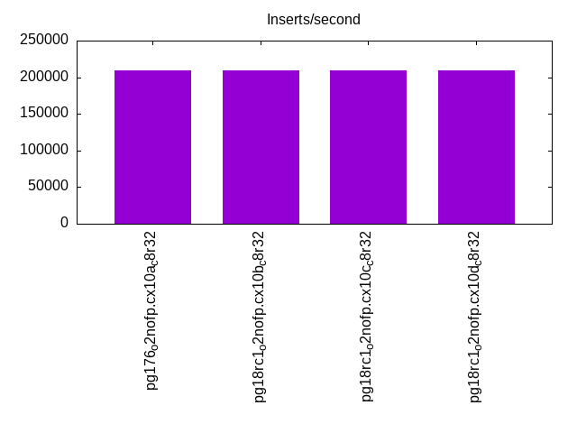
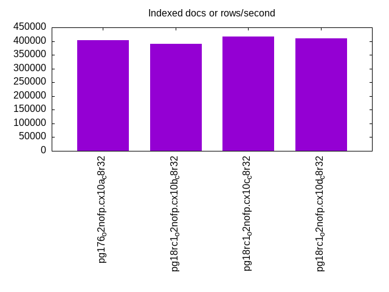
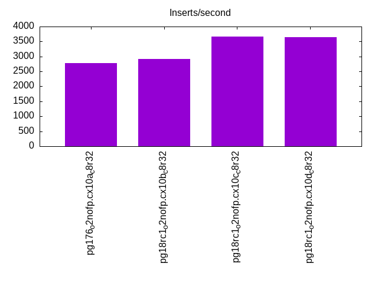
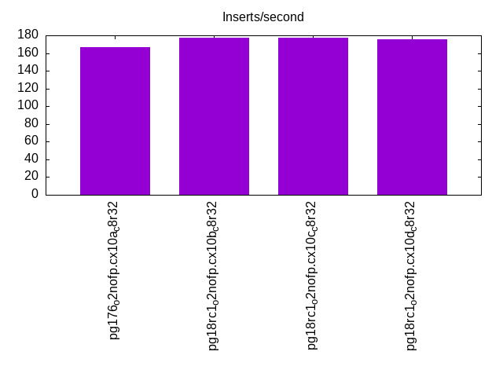
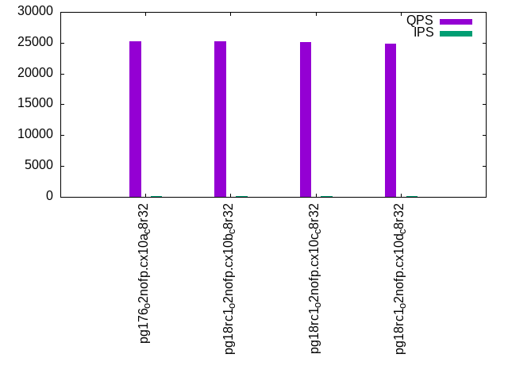
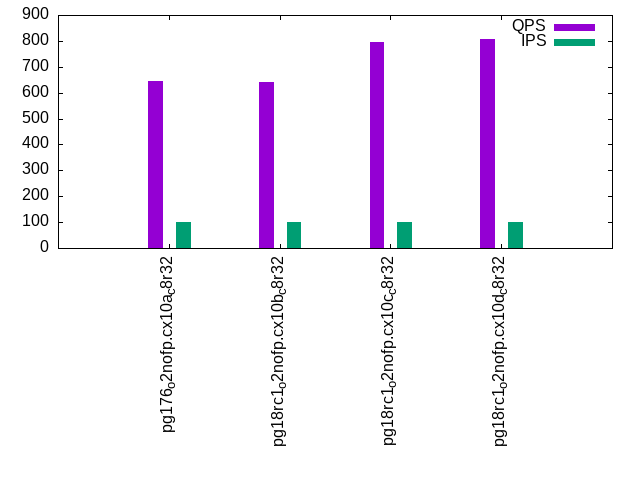
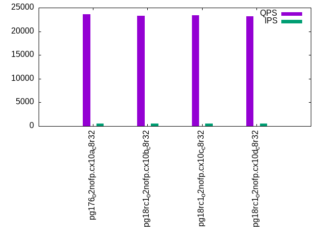
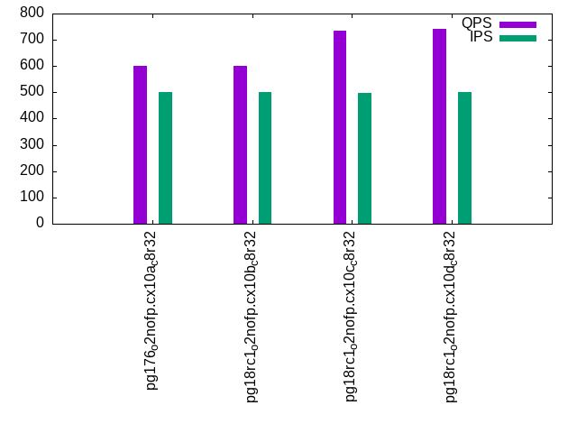
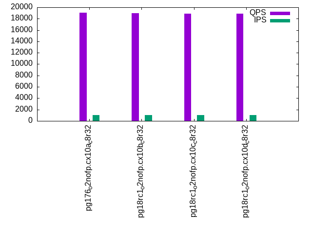
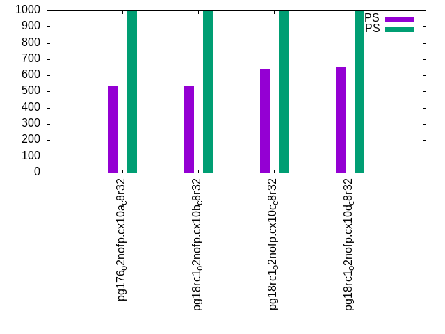

This is a report for the insert benchmark with 800M docs and 1 client(s). It is generated by scripts (bash, awk, sed) and Tufte might not be impressed. An overview of the insert benchmark is here and a short update is here. Below, by DBMS, I mean DBMS+version.config. An example is my8020.c10b40 where my means MySQL, 8020 is version 8.0.20 and c10b40 is the name for the configuration file.
The test server has 8 AMD cores, 32G RAM and an NVMe device for the database. The benchmark was run with 1 client and there were 1 or 3 connections per client (1 for queries or inserts without rate limits, 1+1 for rate limited inserts+deletes). It uses 1 table with a table per client. It loads 800M rows per table without secondary indexes, creates 3 secondary indexes per table, then inserts 4m+1m rows per table with a delete per insert to avoid growing the table. It then does 6 read+write tests for 3600s each that do queries as fast as possible with 100,100,500,500,1000,1000 inserts/s and the same for deletes/s per client concurrent with the queries. The database is larger than memory and the working set it not cached for most benchmark steps. Clients and the DBMS share one server.
The tested DBMS are:
The numbers are inserts/s for l.i0, l.i1 and l.i2, indexed docs (or rows) /s for l.x and queries/s for qr100, qp100 thru qr1000, qp1000" The values are the average rate over the entire test for inserts (IPS) and queries (QPS). The range of values for IPS and QPS is split into 3 parts: bottom 25%, middle 50%, top 25%. Values in the bottom 25% have a red background, values in the top 25% have a green background and values in the middle have no color. A gray background is used for values that can be ignored because the DBMS did not sustain the target insert rate. Red backgrounds are not used when the minimum value is within 80% of the max value.
| dbms | l.i0 | l.x | l.i1 | l.i2 | qr100 | qp100 | qr500 | qp500 | qr1000 | qp1000 |
|---|---|---|---|---|---|---|---|---|---|---|
| pg176_o2nofp.cx10a_c8r32 | 209369 | 402820 | 2784 | 167 | 25242 | 644 | 23609 | 601 | 19081 | 531 |
| pg18rc1_o2nofp.cx10b_c8r32 | 209424 | 390434 | 2920 | 177 | 25177 | 643 | 23248 | 602 | 18981 | 531 |
| pg18rc1_o2nofp.cx10c_c8r32 | 209314 | 415800 | 3660 | 177 | 25050 | 794 | 23339 | 735 | 18871 | 640 |
| pg18rc1_o2nofp.cx10d_c8r32 | 209644 | 410467 | 3653 | 176 | 24871 | 808 | 23142 | 740 | 18847 | 646 |
This table has relative throughput, throughput for the DBMS relative to the DBMS in the first line, using the absolute throughput from the previous table. Values less than 0.95 have a yellow background. Values greater than 1.05 have a blue background.
| dbms | l.i0 | l.x | l.i1 | l.i2 | qr100 | qp100 | qr500 | qp500 | qr1000 | qp1000 |
|---|---|---|---|---|---|---|---|---|---|---|
| pg176_o2nofp.cx10a_c8r32 | 1.00 | 1.00 | 1.00 | 1.00 | 1.00 | 1.00 | 1.00 | 1.00 | 1.00 | 1.00 |
| pg18rc1_o2nofp.cx10b_c8r32 | 1.00 | 0.97 | 1.05 | 1.06 | 1.00 | 1.00 | 0.98 | 1.00 | 0.99 | 1.00 |
| pg18rc1_o2nofp.cx10c_c8r32 | 1.00 | 1.03 | 1.31 | 1.06 | 0.99 | 1.23 | 0.99 | 1.22 | 0.99 | 1.21 |
| pg18rc1_o2nofp.cx10d_c8r32 | 1.00 | 1.02 | 1.31 | 1.05 | 0.99 | 1.25 | 0.98 | 1.23 | 0.99 | 1.22 |
This lists the average rate of inserts/s for the tests that do inserts concurrent with queries. For such tests the query rate is listed in the table above. The read+write tests are setup so that the insert rate should match the target rate every second. Cells that are not at least 95% of the target have a red background to indicate a failure to satisfy the target.
| dbms | qr100.L1 | qp100.L2 | qr500.L3 | qp500.L4 | qr1000.L5 | qp1000.L6 |
|---|---|---|---|---|---|---|
| pg176_o2nofp.cx10a_c8r32 | 100 | 100 | 499 | 500 | 999 | 999 |
| pg18rc1_o2nofp.cx10b_c8r32 | 100 | 100 | 500 | 500 | 999 | 999 |
| pg18rc1_o2nofp.cx10c_c8r32 | 100 | 100 | 499 | 499 | 999 | 998 |
| pg18rc1_o2nofp.cx10d_c8r32 | 100 | 100 | 500 | 500 | 999 | 998 |
| target | 100 | 100 | 500 | 500 | 1000 | 1000 |
l.i0: load without secondary indexes. Graphs for performance per 1-second interval are here.
Average throughput:
Insert response time histogram: each cell has the percentage of responses that take <= the time in the header and max is the max response time in seconds. For the max column values in the top 25% of the range have a red background and in the bottom 25% of the range have a green background. The red background is not used when the min value is within 80% of the max value.
| dbms | 256us | 1ms | 4ms | 16ms | 64ms | 256ms | 1s | 4s | 16s | gt | max |
|---|---|---|---|---|---|---|---|---|---|---|---|
| pg176_o2nofp.cx10a_c8r32 | 99.970 | 0.026 | 0.004 | nonzero | 0.040 | ||||||
| pg18rc1_o2nofp.cx10b_c8r32 | 99.983 | 0.013 | 0.003 | nonzero | 0.046 | ||||||
| pg18rc1_o2nofp.cx10c_c8r32 | 99.983 | 0.014 | 0.003 | nonzero | 0.048 | ||||||
| pg18rc1_o2nofp.cx10d_c8r32 | 99.984 | 0.013 | 0.003 | nonzero | 0.036 |
Performance metrics for the DBMS listed above. Some are normalized by throughput, others are not. Legend for results is here.
ips qps rps rmbps wps wmbps rpq rkbpq wpi wkbpi csps cpups cspq cpupq dbgb1 dbgb2 rss maxop p50 p99 tag 209369 0 37 0.3 783.9 86.5 0.000 0.001 0.004 0.423 21090 20.5 0.101 8 76.5 116.6 19.5 0.040 212372 190167 pg176_o2nofp.cx10a_c8r32 209424 0 35 0.3 783.8 86.1 0.000 0.001 0.004 0.421 20830 20.3 0.099 8 76.5 116.6 18.9 0.046 210665 203165 pg18rc1_o2nofp.cx10b_c8r32 209314 0 35 0.3 782.7 86.0 0.000 0.001 0.004 0.421 20940 20.4 0.100 8 76.5 116.6 0.5 0.048 210572 203168 pg18rc1_o2nofp.cx10c_c8r32 209644 0 36 0.3 783.9 86.2 0.000 0.001 0.004 0.421 21004 20.5 0.100 8 76.5 116.6 18.9 0.036 210963 203176 pg18rc1_o2nofp.cx10d_c8r32
l.x: create secondary indexes.
Average throughput:
Performance metrics for the DBMS listed above. Some are normalized by throughput, others are not. Legend for results is here.
ips qps rps rmbps wps wmbps rpq rkbpq wpi wkbpi csps cpups cspq cpupq dbgb1 dbgb2 rss maxop p50 p99 tag 402820 0 1097 136.0 1235.3 150.4 0.003 0.346 0.003 0.382 889 12.5 0.002 2 153.6 193.7 23.4 0.002 NA NA pg176_o2nofp.cx10a_c8r32 390434 0 1271 141.4 1188.6 145.5 0.003 0.371 0.003 0.382 1105 12.2 0.003 2 153.6 193.7 23.4 0.003 NA NA pg18rc1_o2nofp.cx10b_c8r32 415800 0 1296 147.7 1273.2 155.2 0.003 0.364 0.003 0.382 2151 13.1 0.005 3 153.6 193.7 23.4 0.003 NA NA pg18rc1_o2nofp.cx10c_c8r32 410467 0 1306 147.2 1261.1 152.9 0.003 0.367 0.003 0.381 1783 13.2 0.004 3 153.6 193.7 23.4 0.002 NA NA pg18rc1_o2nofp.cx10d_c8r32
l.i1: continue load after secondary indexes created with 50 inserts per transaction. Graphs for performance per 1-second interval are here.
Average throughput:
Insert response time histogram: each cell has the percentage of responses that take <= the time in the header and max is the max response time in seconds. For the max column values in the top 25% of the range have a red background and in the bottom 25% of the range have a green background. The red background is not used when the min value is within 80% of the max value.
| dbms | 256us | 1ms | 4ms | 16ms | 64ms | 256ms | 1s | 4s | 16s | gt | max |
|---|---|---|---|---|---|---|---|---|---|---|---|
| pg176_o2nofp.cx10a_c8r32 | 88.950 | 9.428 | 1.620 | 0.003 | 0.306 | ||||||
| pg18rc1_o2nofp.cx10b_c8r32 | 90.565 | 7.329 | 2.103 | 0.004 | 0.307 | ||||||
| pg18rc1_o2nofp.cx10c_c8r32 | 98.170 | 1.706 | 0.124 | 0.112 | |||||||
| pg18rc1_o2nofp.cx10d_c8r32 | 98.112 | 1.773 | 0.115 | 0.127 |
Delete response time histogram: each cell has the percentage of responses that take <= the time in the header and max is the max response time in seconds. For the max column values in the top 25% of the range have a red background and in the bottom 25% of the range have a green background. The red background is not used when the min value is within 80% of the max value.
| dbms | 256us | 1ms | 4ms | 16ms | 64ms | 256ms | 1s | 4s | 16s | gt | max |
|---|---|---|---|---|---|---|---|---|---|---|---|
| pg176_o2nofp.cx10a_c8r32 | 1.333 | 17.445 | 41.185 | 40.038 | 0.029 | ||||||
| pg18rc1_o2nofp.cx10b_c8r32 | 1.609 | 17.434 | 43.366 | 37.591 | 0.030 | ||||||
| pg18rc1_o2nofp.cx10c_c8r32 | 0.715 | 17.534 | 44.927 | 36.824 | 0.031 | ||||||
| pg18rc1_o2nofp.cx10d_c8r32 | 0.532 | 18.982 | 42.712 | 37.773 | 0.032 |
Performance metrics for the DBMS listed above. Some are normalized by throughput, others are not. Legend for results is here.
ips qps rps rmbps wps wmbps rpq rkbpq wpi wkbpi csps cpups cspq cpupq dbgb1 dbgb2 rss maxop p50 p99 tag 2784 0 3991 31.5 3293.7 56.4 1.434 11.573 1.183 20.739 8998 12.0 3.232 345 154.3 194.3 22.8 0.306 2400 650 pg176_o2nofp.cx10a_c8r32 2920 0 4193 33.0 3480.1 59.6 1.436 11.587 1.192 20.911 9422 12.2 3.227 334 154.3 194.3 22.8 0.307 2500 650 pg18rc1_o2nofp.cx10b_c8r32 3660 0 5264 41.5 4357.5 74.8 1.438 11.606 1.191 20.929 11805 15.2 3.226 332 154.3 194.3 22.9 0.112 2850 1450 pg18rc1_o2nofp.cx10c_c8r32 3653 0 5261 41.4 4358.8 74.8 1.440 11.619 1.193 20.975 11802 15.2 3.231 333 154.3 194.3 23.0 0.127 2899 1800 pg18rc1_o2nofp.cx10d_c8r32
l.i2: continue load after secondary indexes created with 5 inserts per transaction. Graphs for performance per 1-second interval are here.
Average throughput:
Insert response time histogram: each cell has the percentage of responses that take <= the time in the header and max is the max response time in seconds. For the max column values in the top 25% of the range have a red background and in the bottom 25% of the range have a green background. The red background is not used when the min value is within 80% of the max value.
| dbms | 256us | 1ms | 4ms | 16ms | 64ms | 256ms | 1s | 4s | 16s | gt | max |
|---|---|---|---|---|---|---|---|---|---|---|---|
| pg176_o2nofp.cx10a_c8r32 | 10.630 | 89.259 | 0.110 | 0.001 | 0.019 | ||||||
| pg18rc1_o2nofp.cx10b_c8r32 | 10.586 | 89.394 | 0.019 | 0.001 | 0.018 | ||||||
| pg18rc1_o2nofp.cx10c_c8r32 | 19.010 | 80.763 | 0.226 | 0.002 | 0.040 | ||||||
| pg18rc1_o2nofp.cx10d_c8r32 | 19.224 | 80.553 | 0.222 | 0.002 | 0.025 |
Delete response time histogram: each cell has the percentage of responses that take <= the time in the header and max is the max response time in seconds. For the max column values in the top 25% of the range have a red background and in the bottom 25% of the range have a green background. The red background is not used when the min value is within 80% of the max value.
| dbms | 256us | 1ms | 4ms | 16ms | 64ms | 256ms | 1s | 4s | 16s | gt | max |
|---|---|---|---|---|---|---|---|---|---|---|---|
| pg176_o2nofp.cx10a_c8r32 | 99.999 | 0.001 | 0.085 | ||||||||
| pg18rc1_o2nofp.cx10b_c8r32 | 99.999 | 0.001 | 0.081 | ||||||||
| pg18rc1_o2nofp.cx10c_c8r32 | 99.999 | 0.001 | 0.081 | ||||||||
| pg18rc1_o2nofp.cx10d_c8r32 | 99.999 | 0.001 | 0.081 |
Performance metrics for the DBMS listed above. Some are normalized by throughput, others are not. Legend for results is here.
ips qps rps rmbps wps wmbps rpq rkbpq wpi wkbpi csps cpups cspq cpupq dbgb1 dbgb2 rss maxop p50 p99 tag 167 0 178 1.4 495.6 6.8 1.070 8.674 2.975 41.725 1074 12.7 6.449 6098 154.4 194.5 23.3 0.019 165 145 pg176_o2nofp.cx10a_c8r32 177 0 190 1.5 511.8 7.1 1.071 8.677 2.888 40.927 1139 12.8 6.430 5779 154.4 194.5 23.4 0.018 175 155 pg18rc1_o2nofp.cx10b_c8r32 177 0 190 1.5 512.5 7.1 1.073 8.690 2.891 40.905 1139 12.8 6.424 5776 154.4 194.5 22.9 0.040 175 155 pg18rc1_o2nofp.cx10c_c8r32 176 0 188 1.5 506.7 7.0 1.069 8.663 2.880 40.949 1130 12.8 6.426 5821 154.4 194.5 23.0 0.025 175 155 pg18rc1_o2nofp.cx10d_c8r32
qr100.L1: range queries with 100 insert/s per client. Graphs for performance per 1-second interval are here.
Average throughput:
Query response time histogram: each cell has the percentage of responses that take <= the time in the header and max is the max response time in seconds. For max values in the top 25% of the range have a red background and in the bottom 25% of the range have a green background. The red background is not used when the min value is within 80% of the max value.
| dbms | 256us | 1ms | 4ms | 16ms | 64ms | 256ms | 1s | 4s | 16s | gt | max |
|---|---|---|---|---|---|---|---|---|---|---|---|
| pg176_o2nofp.cx10a_c8r32 | 99.991 | 0.009 | nonzero | nonzero | 0.043 | ||||||
| pg18rc1_o2nofp.cx10b_c8r32 | 99.991 | 0.009 | nonzero | nonzero | 0.024 | ||||||
| pg18rc1_o2nofp.cx10c_c8r32 | 99.990 | 0.010 | nonzero | nonzero | 0.052 | ||||||
| pg18rc1_o2nofp.cx10d_c8r32 | 99.991 | 0.009 | nonzero | nonzero | nonzero | 0.042 |
Insert response time histogram: each cell has the percentage of responses that take <= the time in the header and max is the max response time in seconds. For max values in the top 25% of the range have a red background and in the bottom 25% of the range have a green background. The red background is not used when the min value is within 80% of the max value.
| dbms | 256us | 1ms | 4ms | 16ms | 64ms | 256ms | 1s | 4s | 16s | gt | max |
|---|---|---|---|---|---|---|---|---|---|---|---|
| pg176_o2nofp.cx10a_c8r32 | 0.028 | 99.833 | 0.139 | 0.058 | |||||||
| pg18rc1_o2nofp.cx10b_c8r32 | 0.028 | 99.917 | 0.056 | 0.058 | |||||||
| pg18rc1_o2nofp.cx10c_c8r32 | 99.889 | 0.083 | 0.028 | 0.065 | |||||||
| pg18rc1_o2nofp.cx10d_c8r32 | 99.861 | 0.139 | 0.057 |
Delete response time histogram: each cell has the percentage of responses that take <= the time in the header and max is the max response time in seconds. For max values in the top 25% of the range have a red background and in the bottom 25% of the range have a green background. The red background is not used when the min value is within 80% of the max value.
| dbms | 256us | 1ms | 4ms | 16ms | 64ms | 256ms | 1s | 4s | 16s | gt | max |
|---|---|---|---|---|---|---|---|---|---|---|---|
| pg176_o2nofp.cx10a_c8r32 | 0.028 | 59.750 | 40.222 | 0.002 | |||||||
| pg18rc1_o2nofp.cx10b_c8r32 | 57.889 | 42.111 | 0.003 | ||||||||
| pg18rc1_o2nofp.cx10c_c8r32 | 60.528 | 39.472 | 0.003 | ||||||||
| pg18rc1_o2nofp.cx10d_c8r32 | 59.556 | 40.444 | 0.002 |
Performance metrics for the DBMS listed above. Some are normalized by throughput, others are not. Legend for results is here.
ips qps rps rmbps wps wmbps rpq rkbpq wpi wkbpi csps cpups cspq cpupq dbgb1 dbgb2 rss maxop p50 p99 tag 100 25242 113 0.9 64.1 1.9 0.004 0.037 0.641 19.205 96540 8.5 3.825 27 154.4 191.7 23.3 0.043 25275 25018 pg176_o2nofp.cx10a_c8r32 100 25177 111 0.9 66.5 1.9 0.004 0.036 0.666 19.429 96293 8.7 3.825 28 154.4 191.7 23.4 0.024 25289 24716 pg18rc1_o2nofp.cx10b_c8r32 100 25050 111 0.9 67.9 1.9 0.004 0.037 0.680 19.540 95861 8.6 3.827 27 154.4 191.7 23.4 0.052 25067 24771 pg18rc1_o2nofp.cx10c_c8r32 100 24871 111 0.9 68.5 1.9 0.004 0.037 0.686 19.578 95123 8.6 3.825 28 154.4 191.7 23.4 0.042 24795 24348 pg18rc1_o2nofp.cx10d_c8r32
qp100.L2: point queries with 100 insert/s per client. Graphs for performance per 1-second interval are here.
Average throughput:
Query response time histogram: each cell has the percentage of responses that take <= the time in the header and max is the max response time in seconds. For max values in the top 25% of the range have a red background and in the bottom 25% of the range have a green background. The red background is not used when the min value is within 80% of the max value.
| dbms | 256us | 1ms | 4ms | 16ms | 64ms | 256ms | 1s | 4s | 16s | gt | max |
|---|---|---|---|---|---|---|---|---|---|---|---|
| pg176_o2nofp.cx10a_c8r32 | 3.095 | 96.879 | 0.026 | 0.010 | |||||||
| pg18rc1_o2nofp.cx10b_c8r32 | 3.017 | 96.954 | 0.029 | nonzero | 0.044 | ||||||
| pg18rc1_o2nofp.cx10c_c8r32 | 17.998 | 81.902 | 0.096 | 0.004 | 0.031 | ||||||
| pg18rc1_o2nofp.cx10d_c8r32 | 18.832 | 81.073 | 0.093 | 0.003 | 0.031 |
Insert response time histogram: each cell has the percentage of responses that take <= the time in the header and max is the max response time in seconds. For max values in the top 25% of the range have a red background and in the bottom 25% of the range have a green background. The red background is not used when the min value is within 80% of the max value.
| dbms | 256us | 1ms | 4ms | 16ms | 64ms | 256ms | 1s | 4s | 16s | gt | max |
|---|---|---|---|---|---|---|---|---|---|---|---|
| pg176_o2nofp.cx10a_c8r32 | 99.972 | 0.028 | 0.017 | ||||||||
| pg18rc1_o2nofp.cx10b_c8r32 | 100.000 | 0.015 | |||||||||
| pg18rc1_o2nofp.cx10c_c8r32 | 92.750 | 7.167 | 0.083 | 0.177 | |||||||
| pg18rc1_o2nofp.cx10d_c8r32 | 99.194 | 0.639 | 0.167 | 0.086 |
Delete response time histogram: each cell has the percentage of responses that take <= the time in the header and max is the max response time in seconds. For max values in the top 25% of the range have a red background and in the bottom 25% of the range have a green background. The red background is not used when the min value is within 80% of the max value.
| dbms | 256us | 1ms | 4ms | 16ms | 64ms | 256ms | 1s | 4s | 16s | gt | max |
|---|---|---|---|---|---|---|---|---|---|---|---|
| pg176_o2nofp.cx10a_c8r32 | 4.194 | 95.778 | 0.028 | 0.007 | |||||||
| pg18rc1_o2nofp.cx10b_c8r32 | 4.194 | 95.778 | 0.028 | 0.007 | |||||||
| pg18rc1_o2nofp.cx10c_c8r32 | 4.111 | 95.861 | 0.028 | 0.007 | |||||||
| pg18rc1_o2nofp.cx10d_c8r32 | 5.111 | 94.861 | 0.028 | 0.007 |
Performance metrics for the DBMS listed above. Some are normalized by throughput, others are not. Legend for results is here.
ips qps rps rmbps wps wmbps rpq rkbpq wpi wkbpi csps cpups cspq cpupq dbgb1 dbgb2 rss maxop p50 p99 tag 100 644 8317 65.0 349.9 4.1 12.918 103.454 3.499 41.870 18484 2.2 28.710 273 154.5 191.7 23.3 0.010 656 448 pg176_o2nofp.cx10a_c8r32 100 643 8274 64.7 347.9 4.1 12.876 103.100 3.479 41.723 18396 2.4 28.627 299 154.5 191.7 23.4 0.044 656 432 pg18rc1_o2nofp.cx10b_c8r32 100 794 10082 78.8 350.7 4.1 12.696 101.652 3.511 41.936 22425 3.6 28.239 363 154.5 191.7 23.4 0.031 816 544 pg18rc1_o2nofp.cx10c_c8r32 100 808 10242 80.1 351.0 4.1 12.673 101.462 3.510 41.912 22781 3.7 28.188 366 154.5 191.7 23.4 0.031 832 544 pg18rc1_o2nofp.cx10d_c8r32
qr500.L3: range queries with 500 insert/s per client. Graphs for performance per 1-second interval are here.
Average throughput:
Query response time histogram: each cell has the percentage of responses that take <= the time in the header and max is the max response time in seconds. For max values in the top 25% of the range have a red background and in the bottom 25% of the range have a green background. The red background is not used when the min value is within 80% of the max value.
| dbms | 256us | 1ms | 4ms | 16ms | 64ms | 256ms | 1s | 4s | 16s | gt | max |
|---|---|---|---|---|---|---|---|---|---|---|---|
| pg176_o2nofp.cx10a_c8r32 | 99.985 | 0.015 | nonzero | nonzero | nonzero | 0.026 | |||||
| pg18rc1_o2nofp.cx10b_c8r32 | 99.984 | 0.016 | nonzero | nonzero | nonzero | 0.026 | |||||
| pg18rc1_o2nofp.cx10c_c8r32 | 99.983 | 0.017 | 0.001 | nonzero | nonzero | 0.035 | |||||
| pg18rc1_o2nofp.cx10d_c8r32 | 99.984 | 0.015 | 0.001 | nonzero | nonzero | 0.028 |
Insert response time histogram: each cell has the percentage of responses that take <= the time in the header and max is the max response time in seconds. For max values in the top 25% of the range have a red background and in the bottom 25% of the range have a green background. The red background is not used when the min value is within 80% of the max value.
| dbms | 256us | 1ms | 4ms | 16ms | 64ms | 256ms | 1s | 4s | 16s | gt | max |
|---|---|---|---|---|---|---|---|---|---|---|---|
| pg176_o2nofp.cx10a_c8r32 | 99.856 | 0.144 | 0.043 | ||||||||
| pg18rc1_o2nofp.cx10b_c8r32 | 99.794 | 0.206 | 0.036 | ||||||||
| pg18rc1_o2nofp.cx10c_c8r32 | 99.628 | 0.294 | 0.078 | 0.146 | |||||||
| pg18rc1_o2nofp.cx10d_c8r32 | 99.478 | 0.456 | 0.067 | 0.155 |
Delete response time histogram: each cell has the percentage of responses that take <= the time in the header and max is the max response time in seconds. For max values in the top 25% of the range have a red background and in the bottom 25% of the range have a green background. The red background is not used when the min value is within 80% of the max value.
| dbms | 256us | 1ms | 4ms | 16ms | 64ms | 256ms | 1s | 4s | 16s | gt | max |
|---|---|---|---|---|---|---|---|---|---|---|---|
| pg176_o2nofp.cx10a_c8r32 | 52.417 | 47.583 | 0.012 | ||||||||
| pg18rc1_o2nofp.cx10b_c8r32 | 52.567 | 47.433 | 0.012 | ||||||||
| pg18rc1_o2nofp.cx10c_c8r32 | 52.933 | 47.067 | 0.012 | ||||||||
| pg18rc1_o2nofp.cx10d_c8r32 | 53.450 | 46.550 | 0.012 |
Performance metrics for the DBMS listed above. Some are normalized by throughput, others are not. Legend for results is here.
ips qps rps rmbps wps wmbps rpq rkbpq wpi wkbpi csps cpups cspq cpupq dbgb1 dbgb2 rss maxop p50 p99 tag 499 23609 872 6.9 341.8 9.3 0.037 0.300 0.684 19.033 91954 9.7 3.895 33 154.5 190.2 23.3 0.026 23675 22428 pg176_o2nofp.cx10a_c8r32 500 23248 871 6.9 348.9 9.4 0.037 0.305 0.698 19.169 90529 9.7 3.894 33 154.5 190.2 23.4 0.026 23308 22156 pg18rc1_o2nofp.cx10b_c8r32 499 23339 873 6.9 346.9 9.3 0.037 0.304 0.695 19.161 90937 9.6 3.896 33 154.5 190.2 23.4 0.035 23404 22126 pg18rc1_o2nofp.cx10c_c8r32 500 23142 873 6.9 348.2 9.4 0.038 0.307 0.697 19.174 90130 9.8 3.895 34 154.5 190.2 23.4 0.028 23242 22108 pg18rc1_o2nofp.cx10d_c8r32
qp500.L4: point queries with 500 insert/s per client. Graphs for performance per 1-second interval are here.
Average throughput:
Query response time histogram: each cell has the percentage of responses that take <= the time in the header and max is the max response time in seconds. For max values in the top 25% of the range have a red background and in the bottom 25% of the range have a green background. The red background is not used when the min value is within 80% of the max value.
| dbms | 256us | 1ms | 4ms | 16ms | 64ms | 256ms | 1s | 4s | 16s | gt | max |
|---|---|---|---|---|---|---|---|---|---|---|---|
| pg176_o2nofp.cx10a_c8r32 | 1.417 | 98.451 | 0.133 | nonzero | 0.040 | ||||||
| pg18rc1_o2nofp.cx10b_c8r32 | 1.442 | 98.424 | 0.134 | nonzero | 0.033 | ||||||
| pg18rc1_o2nofp.cx10c_c8r32 | 10.559 | 88.853 | 0.574 | 0.014 | 0.036 | ||||||
| pg18rc1_o2nofp.cx10d_c8r32 | 11.229 | 88.162 | 0.595 | 0.014 | 0.037 |
Insert response time histogram: each cell has the percentage of responses that take <= the time in the header and max is the max response time in seconds. For max values in the top 25% of the range have a red background and in the bottom 25% of the range have a green background. The red background is not used when the min value is within 80% of the max value.
| dbms | 256us | 1ms | 4ms | 16ms | 64ms | 256ms | 1s | 4s | 16s | gt | max |
|---|---|---|---|---|---|---|---|---|---|---|---|
| pg176_o2nofp.cx10a_c8r32 | 99.250 | 0.750 | 0.058 | ||||||||
| pg18rc1_o2nofp.cx10b_c8r32 | 99.361 | 0.639 | 0.050 | ||||||||
| pg18rc1_o2nofp.cx10c_c8r32 | 95.661 | 4.239 | 0.100 | 0.174 | |||||||
| pg18rc1_o2nofp.cx10d_c8r32 | 95.539 | 4.328 | 0.133 | 0.187 |
Delete response time histogram: each cell has the percentage of responses that take <= the time in the header and max is the max response time in seconds. For max values in the top 25% of the range have a red background and in the bottom 25% of the range have a green background. The red background is not used when the min value is within 80% of the max value.
| dbms | 256us | 1ms | 4ms | 16ms | 64ms | 256ms | 1s | 4s | 16s | gt | max |
|---|---|---|---|---|---|---|---|---|---|---|---|
| pg176_o2nofp.cx10a_c8r32 | 99.100 | 0.900 | 0.035 | ||||||||
| pg18rc1_o2nofp.cx10b_c8r32 | 99.950 | 0.050 | 0.035 | ||||||||
| pg18rc1_o2nofp.cx10c_c8r32 | 99.950 | 0.050 | 0.035 | ||||||||
| pg18rc1_o2nofp.cx10d_c8r32 | 99.928 | 0.072 | 0.034 |
Performance metrics for the DBMS listed above. Some are normalized by throughput, others are not. Legend for results is here.
ips qps rps rmbps wps wmbps rpq rkbpq wpi wkbpi csps cpups cspq cpupq dbgb1 dbgb2 rss maxop p50 p99 tag 500 601 8728 68.3 1565.1 18.4 14.528 116.411 3.132 37.611 19250 4.8 32.041 639 154.6 188.5 23.3 0.040 608 448 pg176_o2nofp.cx10a_c8r32 500 602 8706 68.1 1559.1 18.3 14.474 115.998 3.118 37.494 19206 4.8 31.931 638 154.6 188.5 23.4 0.033 608 448 pg18rc1_o2nofp.cx10b_c8r32 499 735 10324 80.8 1579.6 18.5 14.050 112.567 3.163 37.869 22803 4.9 31.033 533 154.6 188.4 23.4 0.036 752 464 pg18rc1_o2nofp.cx10c_c8r32 500 740 10385 81.3 1578.6 18.5 14.025 112.377 3.159 37.829 22940 4.9 30.980 529 154.6 188.4 23.4 0.037 768 480 pg18rc1_o2nofp.cx10d_c8r32
qr1000.L5: range queries with 1000 insert/s per client. Graphs for performance per 1-second interval are here.
Average throughput:
Query response time histogram: each cell has the percentage of responses that take <= the time in the header and max is the max response time in seconds. For max values in the top 25% of the range have a red background and in the bottom 25% of the range have a green background. The red background is not used when the min value is within 80% of the max value.
| dbms | 256us | 1ms | 4ms | 16ms | 64ms | 256ms | 1s | 4s | 16s | gt | max |
|---|---|---|---|---|---|---|---|---|---|---|---|
| pg176_o2nofp.cx10a_c8r32 | 99.957 | 0.041 | 0.002 | nonzero | nonzero | nonzero | 0.065 | ||||
| pg18rc1_o2nofp.cx10b_c8r32 | 99.951 | 0.047 | 0.002 | nonzero | nonzero | nonzero | 0.078 | ||||
| pg18rc1_o2nofp.cx10c_c8r32 | 99.953 | 0.045 | 0.002 | nonzero | nonzero | nonzero | 0.096 | ||||
| pg18rc1_o2nofp.cx10d_c8r32 | 99.959 | 0.039 | 0.002 | nonzero | nonzero | nonzero | 0.118 |
Insert response time histogram: each cell has the percentage of responses that take <= the time in the header and max is the max response time in seconds. For max values in the top 25% of the range have a red background and in the bottom 25% of the range have a green background. The red background is not used when the min value is within 80% of the max value.
| dbms | 256us | 1ms | 4ms | 16ms | 64ms | 256ms | 1s | 4s | 16s | gt | max |
|---|---|---|---|---|---|---|---|---|---|---|---|
| pg176_o2nofp.cx10a_c8r32 | 99.581 | 0.419 | 0.030 | ||||||||
| pg18rc1_o2nofp.cx10b_c8r32 | 99.644 | 0.356 | 0.029 | ||||||||
| pg18rc1_o2nofp.cx10c_c8r32 | 98.861 | 1.011 | 0.128 | 0.148 | |||||||
| pg18rc1_o2nofp.cx10d_c8r32 | 98.911 | 0.958 | 0.131 | 0.155 |
Delete response time histogram: each cell has the percentage of responses that take <= the time in the header and max is the max response time in seconds. For max values in the top 25% of the range have a red background and in the bottom 25% of the range have a green background. The red background is not used when the min value is within 80% of the max value.
| dbms | 256us | 1ms | 4ms | 16ms | 64ms | 256ms | 1s | 4s | 16s | gt | max |
|---|---|---|---|---|---|---|---|---|---|---|---|
| pg176_o2nofp.cx10a_c8r32 | 11.703 | 88.297 | 0.053 | ||||||||
| pg18rc1_o2nofp.cx10b_c8r32 | 18.056 | 81.944 | 0.051 | ||||||||
| pg18rc1_o2nofp.cx10c_c8r32 | 19.078 | 80.922 | 0.052 | ||||||||
| pg18rc1_o2nofp.cx10d_c8r32 | 18.897 | 81.103 | 0.052 |
Performance metrics for the DBMS listed above. Some are normalized by throughput, others are not. Legend for results is here.
ips qps rps rmbps wps wmbps rpq rkbpq wpi wkbpi csps cpups cspq cpupq dbgb1 dbgb2 rss maxop p50 p99 tag 999 19081 1493 11.9 940.7 19.1 0.078 0.640 0.942 19.615 76102 16.0 3.988 67 154.8 187.7 23.3 0.065 19118 17497 pg176_o2nofp.cx10a_c8r32 999 18981 1494 11.9 943.0 19.2 0.079 0.644 0.944 19.649 75679 15.9 3.987 67 154.8 187.7 23.4 0.078 19017 17373 pg18rc1_o2nofp.cx10b_c8r32 999 18871 1498 12.0 931.2 19.1 0.079 0.649 0.932 19.570 75301 15.9 3.990 67 154.8 187.6 23.4 0.096 18893 17128 pg18rc1_o2nofp.cx10c_c8r32 999 18847 1499 12.0 930.8 19.1 0.080 0.651 0.931 19.556 75183 15.9 3.989 67 154.8 187.6 23.4 0.118 18861 17277 pg18rc1_o2nofp.cx10d_c8r32
qp1000.L6: point queries with 1000 insert/s per client. Graphs for performance per 1-second interval are here.
Average throughput:
Query response time histogram: each cell has the percentage of responses that take <= the time in the header and max is the max response time in seconds. For max values in the top 25% of the range have a red background and in the bottom 25% of the range have a green background. The red background is not used when the min value is within 80% of the max value.
| dbms | 256us | 1ms | 4ms | 16ms | 64ms | 256ms | 1s | 4s | 16s | gt | max |
|---|---|---|---|---|---|---|---|---|---|---|---|
| pg176_o2nofp.cx10a_c8r32 | 0.457 | 99.244 | 0.299 | nonzero | 0.032 | ||||||
| pg18rc1_o2nofp.cx10b_c8r32 | 0.455 | 99.248 | 0.296 | nonzero | 0.029 | ||||||
| pg18rc1_o2nofp.cx10c_c8r32 | 4.301 | 94.385 | 1.285 | 0.030 | 0.041 | ||||||
| pg18rc1_o2nofp.cx10d_c8r32 | 4.585 | 94.083 | 1.301 | 0.031 | 0.040 |
Insert response time histogram: each cell has the percentage of responses that take <= the time in the header and max is the max response time in seconds. For max values in the top 25% of the range have a red background and in the bottom 25% of the range have a green background. The red background is not used when the min value is within 80% of the max value.
| dbms | 256us | 1ms | 4ms | 16ms | 64ms | 256ms | 1s | 4s | 16s | gt | max |
|---|---|---|---|---|---|---|---|---|---|---|---|
| pg176_o2nofp.cx10a_c8r32 | 98.867 | 1.133 | 0.036 | ||||||||
| pg18rc1_o2nofp.cx10b_c8r32 | 99.008 | 0.992 | 0.042 | ||||||||
| pg18rc1_o2nofp.cx10c_c8r32 | 93.458 | 6.294 | 0.247 | 0.189 | |||||||
| pg18rc1_o2nofp.cx10d_c8r32 | 93.444 | 6.278 | 0.278 | 0.182 |
Delete response time histogram: each cell has the percentage of responses that take <= the time in the header and max is the max response time in seconds. For max values in the top 25% of the range have a red background and in the bottom 25% of the range have a green background. The red background is not used when the min value is within 80% of the max value.
| dbms | 256us | 1ms | 4ms | 16ms | 64ms | 256ms | 1s | 4s | 16s | gt | max |
|---|---|---|---|---|---|---|---|---|---|---|---|
| pg176_o2nofp.cx10a_c8r32 | 99.997 | 0.003 | 0.083 | ||||||||
| pg18rc1_o2nofp.cx10b_c8r32 | 99.997 | 0.003 | 0.082 | ||||||||
| pg18rc1_o2nofp.cx10c_c8r32 | 99.997 | 0.003 | 0.083 | ||||||||
| pg18rc1_o2nofp.cx10d_c8r32 | 99.997 | 0.003 | 0.083 |
Performance metrics for the DBMS listed above. Some are normalized by throughput, others are not. Legend for results is here.
ips qps rps rmbps wps wmbps rpq rkbpq wpi wkbpi csps cpups cspq cpupq dbgb1 dbgb2 rss maxop p50 p99 tag 999 531 9071 71.0 2734.1 33.9 17.079 136.931 2.737 34.765 19877 12.5 37.426 1883 155.0 190.9 23.3 0.032 544 384 pg176_o2nofp.cx10a_c8r32 999 531 9042 70.8 2736.1 33.8 17.018 136.454 2.738 34.644 19822 12.2 37.308 1837 155.0 190.7 23.4 0.029 544 384 pg18rc1_o2nofp.cx10b_c8r32 998 640 10398 81.4 2779.4 34.1 16.259 130.329 2.784 34.968 22821 12.8 35.686 1601 155.0 190.5 23.4 0.041 672 256 pg18rc1_o2nofp.cx10c_c8r32 998 646 10467 81.9 2781.9 34.1 16.210 129.944 2.787 34.959 22984 12.8 35.596 1586 155.0 190.4 23.4 0.040 672 288 pg18rc1_o2nofp.cx10d_c8r32
l.i0: load without secondary indexes
Performance metrics for all DBMS, not just the ones listed above. Some are normalized by throughput, others are not. Legend for results is here.
ips qps rps rmbps wps wmbps rpq rkbpq wpi wkbpi csps cpups cspq cpupq dbgb1 dbgb2 rss maxop p50 p99 tag 209369 0 37 0.3 783.9 86.5 0.000 0.001 0.004 0.423 21090 20.5 0.101 8 76.5 116.6 19.5 0.040 212372 190167 pg176_o2nofp.cx10a_c8r32 209424 0 35 0.3 783.8 86.1 0.000 0.001 0.004 0.421 20830 20.3 0.099 8 76.5 116.6 18.9 0.046 210665 203165 pg18rc1_o2nofp.cx10b_c8r32 209314 0 35 0.3 782.7 86.0 0.000 0.001 0.004 0.421 20940 20.4 0.100 8 76.5 116.6 0.5 0.048 210572 203168 pg18rc1_o2nofp.cx10c_c8r32 209644 0 36 0.3 783.9 86.2 0.000 0.001 0.004 0.421 21004 20.5 0.100 8 76.5 116.6 18.9 0.036 210963 203176 pg18rc1_o2nofp.cx10d_c8r32
l.x: create secondary indexes
Performance metrics for all DBMS, not just the ones listed above. Some are normalized by throughput, others are not. Legend for results is here.
ips qps rps rmbps wps wmbps rpq rkbpq wpi wkbpi csps cpups cspq cpupq dbgb1 dbgb2 rss maxop p50 p99 tag 402820 0 1097 136.0 1235.3 150.4 0.003 0.346 0.003 0.382 889 12.5 0.002 2 153.6 193.7 23.4 0.002 NA NA pg176_o2nofp.cx10a_c8r32 390434 0 1271 141.4 1188.6 145.5 0.003 0.371 0.003 0.382 1105 12.2 0.003 2 153.6 193.7 23.4 0.003 NA NA pg18rc1_o2nofp.cx10b_c8r32 415800 0 1296 147.7 1273.2 155.2 0.003 0.364 0.003 0.382 2151 13.1 0.005 3 153.6 193.7 23.4 0.003 NA NA pg18rc1_o2nofp.cx10c_c8r32 410467 0 1306 147.2 1261.1 152.9 0.003 0.367 0.003 0.381 1783 13.2 0.004 3 153.6 193.7 23.4 0.002 NA NA pg18rc1_o2nofp.cx10d_c8r32
l.i1: continue load after secondary indexes created with 50 inserts per transaction
Performance metrics for all DBMS, not just the ones listed above. Some are normalized by throughput, others are not. Legend for results is here.
ips qps rps rmbps wps wmbps rpq rkbpq wpi wkbpi csps cpups cspq cpupq dbgb1 dbgb2 rss maxop p50 p99 tag 2784 0 3991 31.5 3293.7 56.4 1.434 11.573 1.183 20.739 8998 12.0 3.232 345 154.3 194.3 22.8 0.306 2400 650 pg176_o2nofp.cx10a_c8r32 2920 0 4193 33.0 3480.1 59.6 1.436 11.587 1.192 20.911 9422 12.2 3.227 334 154.3 194.3 22.8 0.307 2500 650 pg18rc1_o2nofp.cx10b_c8r32 3660 0 5264 41.5 4357.5 74.8 1.438 11.606 1.191 20.929 11805 15.2 3.226 332 154.3 194.3 22.9 0.112 2850 1450 pg18rc1_o2nofp.cx10c_c8r32 3653 0 5261 41.4 4358.8 74.8 1.440 11.619 1.193 20.975 11802 15.2 3.231 333 154.3 194.3 23.0 0.127 2899 1800 pg18rc1_o2nofp.cx10d_c8r32
l.i2: continue load after secondary indexes created with 5 inserts per transaction
Performance metrics for all DBMS, not just the ones listed above. Some are normalized by throughput, others are not. Legend for results is here.
ips qps rps rmbps wps wmbps rpq rkbpq wpi wkbpi csps cpups cspq cpupq dbgb1 dbgb2 rss maxop p50 p99 tag 167 0 178 1.4 495.6 6.8 1.070 8.674 2.975 41.725 1074 12.7 6.449 6098 154.4 194.5 23.3 0.019 165 145 pg176_o2nofp.cx10a_c8r32 177 0 190 1.5 511.8 7.1 1.071 8.677 2.888 40.927 1139 12.8 6.430 5779 154.4 194.5 23.4 0.018 175 155 pg18rc1_o2nofp.cx10b_c8r32 177 0 190 1.5 512.5 7.1 1.073 8.690 2.891 40.905 1139 12.8 6.424 5776 154.4 194.5 22.9 0.040 175 155 pg18rc1_o2nofp.cx10c_c8r32 176 0 188 1.5 506.7 7.0 1.069 8.663 2.880 40.949 1130 12.8 6.426 5821 154.4 194.5 23.0 0.025 175 155 pg18rc1_o2nofp.cx10d_c8r32
qr100.L1: range queries with 100 insert/s per client
Performance metrics for all DBMS, not just the ones listed above. Some are normalized by throughput, others are not. Legend for results is here.
ips qps rps rmbps wps wmbps rpq rkbpq wpi wkbpi csps cpups cspq cpupq dbgb1 dbgb2 rss maxop p50 p99 tag 100 25242 113 0.9 64.1 1.9 0.004 0.037 0.641 19.205 96540 8.5 3.825 27 154.4 191.7 23.3 0.043 25275 25018 pg176_o2nofp.cx10a_c8r32 100 25177 111 0.9 66.5 1.9 0.004 0.036 0.666 19.429 96293 8.7 3.825 28 154.4 191.7 23.4 0.024 25289 24716 pg18rc1_o2nofp.cx10b_c8r32 100 25050 111 0.9 67.9 1.9 0.004 0.037 0.680 19.540 95861 8.6 3.827 27 154.4 191.7 23.4 0.052 25067 24771 pg18rc1_o2nofp.cx10c_c8r32 100 24871 111 0.9 68.5 1.9 0.004 0.037 0.686 19.578 95123 8.6 3.825 28 154.4 191.7 23.4 0.042 24795 24348 pg18rc1_o2nofp.cx10d_c8r32
qp100.L2: point queries with 100 insert/s per client
Performance metrics for all DBMS, not just the ones listed above. Some are normalized by throughput, others are not. Legend for results is here.
ips qps rps rmbps wps wmbps rpq rkbpq wpi wkbpi csps cpups cspq cpupq dbgb1 dbgb2 rss maxop p50 p99 tag 100 644 8317 65.0 349.9 4.1 12.918 103.454 3.499 41.870 18484 2.2 28.710 273 154.5 191.7 23.3 0.010 656 448 pg176_o2nofp.cx10a_c8r32 100 643 8274 64.7 347.9 4.1 12.876 103.100 3.479 41.723 18396 2.4 28.627 299 154.5 191.7 23.4 0.044 656 432 pg18rc1_o2nofp.cx10b_c8r32 100 794 10082 78.8 350.7 4.1 12.696 101.652 3.511 41.936 22425 3.6 28.239 363 154.5 191.7 23.4 0.031 816 544 pg18rc1_o2nofp.cx10c_c8r32 100 808 10242 80.1 351.0 4.1 12.673 101.462 3.510 41.912 22781 3.7 28.188 366 154.5 191.7 23.4 0.031 832 544 pg18rc1_o2nofp.cx10d_c8r32
qr500.L3: range queries with 500 insert/s per client
Performance metrics for all DBMS, not just the ones listed above. Some are normalized by throughput, others are not. Legend for results is here.
ips qps rps rmbps wps wmbps rpq rkbpq wpi wkbpi csps cpups cspq cpupq dbgb1 dbgb2 rss maxop p50 p99 tag 499 23609 872 6.9 341.8 9.3 0.037 0.300 0.684 19.033 91954 9.7 3.895 33 154.5 190.2 23.3 0.026 23675 22428 pg176_o2nofp.cx10a_c8r32 500 23248 871 6.9 348.9 9.4 0.037 0.305 0.698 19.169 90529 9.7 3.894 33 154.5 190.2 23.4 0.026 23308 22156 pg18rc1_o2nofp.cx10b_c8r32 499 23339 873 6.9 346.9 9.3 0.037 0.304 0.695 19.161 90937 9.6 3.896 33 154.5 190.2 23.4 0.035 23404 22126 pg18rc1_o2nofp.cx10c_c8r32 500 23142 873 6.9 348.2 9.4 0.038 0.307 0.697 19.174 90130 9.8 3.895 34 154.5 190.2 23.4 0.028 23242 22108 pg18rc1_o2nofp.cx10d_c8r32
qp500.L4: point queries with 500 insert/s per client
Performance metrics for all DBMS, not just the ones listed above. Some are normalized by throughput, others are not. Legend for results is here.
ips qps rps rmbps wps wmbps rpq rkbpq wpi wkbpi csps cpups cspq cpupq dbgb1 dbgb2 rss maxop p50 p99 tag 500 601 8728 68.3 1565.1 18.4 14.528 116.411 3.132 37.611 19250 4.8 32.041 639 154.6 188.5 23.3 0.040 608 448 pg176_o2nofp.cx10a_c8r32 500 602 8706 68.1 1559.1 18.3 14.474 115.998 3.118 37.494 19206 4.8 31.931 638 154.6 188.5 23.4 0.033 608 448 pg18rc1_o2nofp.cx10b_c8r32 499 735 10324 80.8 1579.6 18.5 14.050 112.567 3.163 37.869 22803 4.9 31.033 533 154.6 188.4 23.4 0.036 752 464 pg18rc1_o2nofp.cx10c_c8r32 500 740 10385 81.3 1578.6 18.5 14.025 112.377 3.159 37.829 22940 4.9 30.980 529 154.6 188.4 23.4 0.037 768 480 pg18rc1_o2nofp.cx10d_c8r32
qr1000.L5: range queries with 1000 insert/s per client
Performance metrics for all DBMS, not just the ones listed above. Some are normalized by throughput, others are not. Legend for results is here.
ips qps rps rmbps wps wmbps rpq rkbpq wpi wkbpi csps cpups cspq cpupq dbgb1 dbgb2 rss maxop p50 p99 tag 999 19081 1493 11.9 940.7 19.1 0.078 0.640 0.942 19.615 76102 16.0 3.988 67 154.8 187.7 23.3 0.065 19118 17497 pg176_o2nofp.cx10a_c8r32 999 18981 1494 11.9 943.0 19.2 0.079 0.644 0.944 19.649 75679 15.9 3.987 67 154.8 187.7 23.4 0.078 19017 17373 pg18rc1_o2nofp.cx10b_c8r32 999 18871 1498 12.0 931.2 19.1 0.079 0.649 0.932 19.570 75301 15.9 3.990 67 154.8 187.6 23.4 0.096 18893 17128 pg18rc1_o2nofp.cx10c_c8r32 999 18847 1499 12.0 930.8 19.1 0.080 0.651 0.931 19.556 75183 15.9 3.989 67 154.8 187.6 23.4 0.118 18861 17277 pg18rc1_o2nofp.cx10d_c8r32
qp1000.L6: point queries with 1000 insert/s per client
Performance metrics for all DBMS, not just the ones listed above. Some are normalized by throughput, others are not. Legend for results is here.
ips qps rps rmbps wps wmbps rpq rkbpq wpi wkbpi csps cpups cspq cpupq dbgb1 dbgb2 rss maxop p50 p99 tag 999 531 9071 71.0 2734.1 33.9 17.079 136.931 2.737 34.765 19877 12.5 37.426 1883 155.0 190.9 23.3 0.032 544 384 pg176_o2nofp.cx10a_c8r32 999 531 9042 70.8 2736.1 33.8 17.018 136.454 2.738 34.644 19822 12.2 37.308 1837 155.0 190.7 23.4 0.029 544 384 pg18rc1_o2nofp.cx10b_c8r32 998 640 10398 81.4 2779.4 34.1 16.259 130.329 2.784 34.968 22821 12.8 35.686 1601 155.0 190.5 23.4 0.041 672 256 pg18rc1_o2nofp.cx10c_c8r32 998 646 10467 81.9 2781.9 34.1 16.210 129.944 2.787 34.959 22984 12.8 35.596 1586 155.0 190.4 23.4 0.040 672 288 pg18rc1_o2nofp.cx10d_c8r32
Insert response time histogram
256us 1ms 4ms 16ms 64ms 256ms 1s 4s 16s gt max tag 0.000 99.970 0.026 0.004 nonzero 0.000 0.000 0.000 0.000 0.000 0.040 pg176_o2nofp.cx10a_c8r32 0.000 99.983 0.013 0.003 nonzero 0.000 0.000 0.000 0.000 0.000 0.046 pg18rc1_o2nofp.cx10b_c8r32 0.000 99.983 0.014 0.003 nonzero 0.000 0.000 0.000 0.000 0.000 0.048 pg18rc1_o2nofp.cx10c_c8r32 0.000 99.984 0.013 0.003 nonzero 0.000 0.000 0.000 0.000 0.000 0.036 pg18rc1_o2nofp.cx10d_c8r32
TODO - determine whether there is data for create index response time
Insert response time histogram
256us 1ms 4ms 16ms 64ms 256ms 1s 4s 16s gt max tag 0.000 0.000 0.000 88.950 9.428 1.620 0.003 0.000 0.000 0.000 0.306 pg176_o2nofp.cx10a_c8r32 0.000 0.000 0.000 90.565 7.329 2.103 0.004 0.000 0.000 0.000 0.307 pg18rc1_o2nofp.cx10b_c8r32 0.000 0.000 0.000 98.170 1.706 0.124 0.000 0.000 0.000 0.000 0.112 pg18rc1_o2nofp.cx10c_c8r32 0.000 0.000 0.000 98.112 1.773 0.115 0.000 0.000 0.000 0.000 0.127 pg18rc1_o2nofp.cx10d_c8r32
Delete response time histogram
256us 1ms 4ms 16ms 64ms 256ms 1s 4s 16s gt max tag 0.000 1.333 17.445 41.185 40.038 0.000 0.000 0.000 0.000 0.000 0.029 pg176_o2nofp.cx10a_c8r32 0.000 1.609 17.434 43.366 37.591 0.000 0.000 0.000 0.000 0.000 0.030 pg18rc1_o2nofp.cx10b_c8r32 0.000 0.715 17.534 44.927 36.824 0.000 0.000 0.000 0.000 0.000 0.031 pg18rc1_o2nofp.cx10c_c8r32 0.000 0.532 18.982 42.712 37.773 0.000 0.000 0.000 0.000 0.000 0.032 pg18rc1_o2nofp.cx10d_c8r32
Insert response time histogram
256us 1ms 4ms 16ms 64ms 256ms 1s 4s 16s gt max tag 0.000 10.630 89.259 0.110 0.001 0.000 0.000 0.000 0.000 0.000 0.019 pg176_o2nofp.cx10a_c8r32 0.000 10.586 89.394 0.019 0.001 0.000 0.000 0.000 0.000 0.000 0.018 pg18rc1_o2nofp.cx10b_c8r32 0.000 19.010 80.763 0.226 0.002 0.000 0.000 0.000 0.000 0.000 0.040 pg18rc1_o2nofp.cx10c_c8r32 0.000 19.224 80.553 0.222 0.002 0.000 0.000 0.000 0.000 0.000 0.025 pg18rc1_o2nofp.cx10d_c8r32
Delete response time histogram
256us 1ms 4ms 16ms 64ms 256ms 1s 4s 16s gt max tag 0.000 0.000 0.000 0.000 99.999 0.001 0.000 0.000 0.000 0.000 0.085 pg176_o2nofp.cx10a_c8r32 0.000 0.000 0.000 0.000 99.999 0.001 0.000 0.000 0.000 0.000 0.081 pg18rc1_o2nofp.cx10b_c8r32 0.000 0.000 0.000 0.000 99.999 0.001 0.000 0.000 0.000 0.000 0.081 pg18rc1_o2nofp.cx10c_c8r32 0.000 0.000 0.000 0.000 99.999 0.001 0.000 0.000 0.000 0.000 0.081 pg18rc1_o2nofp.cx10d_c8r32
Query response time histogram
256us 1ms 4ms 16ms 64ms 256ms 1s 4s 16s gt max tag 99.991 0.009 nonzero 0.000 nonzero 0.000 0.000 0.000 0.000 0.000 0.043 pg176_o2nofp.cx10a_c8r32 99.991 0.009 nonzero 0.000 nonzero 0.000 0.000 0.000 0.000 0.000 0.024 pg18rc1_o2nofp.cx10b_c8r32 99.990 0.010 nonzero 0.000 nonzero 0.000 0.000 0.000 0.000 0.000 0.052 pg18rc1_o2nofp.cx10c_c8r32 99.991 0.009 nonzero nonzero nonzero 0.000 0.000 0.000 0.000 0.000 0.042 pg18rc1_o2nofp.cx10d_c8r32
Insert response time histogram
256us 1ms 4ms 16ms 64ms 256ms 1s 4s 16s gt max tag 0.000 0.000 0.028 99.833 0.139 0.000 0.000 0.000 0.000 0.000 0.058 pg176_o2nofp.cx10a_c8r32 0.000 0.000 0.028 99.917 0.056 0.000 0.000 0.000 0.000 0.000 0.058 pg18rc1_o2nofp.cx10b_c8r32 0.000 0.000 0.000 99.889 0.083 0.028 0.000 0.000 0.000 0.000 0.065 pg18rc1_o2nofp.cx10c_c8r32 0.000 0.000 0.000 99.861 0.139 0.000 0.000 0.000 0.000 0.000 0.057 pg18rc1_o2nofp.cx10d_c8r32
Delete response time histogram
256us 1ms 4ms 16ms 64ms 256ms 1s 4s 16s gt max tag 0.028 59.750 40.222 0.000 0.000 0.000 0.000 0.000 0.000 0.000 0.002 pg176_o2nofp.cx10a_c8r32 0.000 57.889 42.111 0.000 0.000 0.000 0.000 0.000 0.000 0.000 0.003 pg18rc1_o2nofp.cx10b_c8r32 0.000 60.528 39.472 0.000 0.000 0.000 0.000 0.000 0.000 0.000 0.003 pg18rc1_o2nofp.cx10c_c8r32 0.000 59.556 40.444 0.000 0.000 0.000 0.000 0.000 0.000 0.000 0.002 pg18rc1_o2nofp.cx10d_c8r32
Query response time histogram
256us 1ms 4ms 16ms 64ms 256ms 1s 4s 16s gt max tag 0.000 3.095 96.879 0.026 0.000 0.000 0.000 0.000 0.000 0.000 0.010 pg176_o2nofp.cx10a_c8r32 0.000 3.017 96.954 0.029 nonzero 0.000 0.000 0.000 0.000 0.000 0.044 pg18rc1_o2nofp.cx10b_c8r32 0.000 17.998 81.902 0.096 0.004 0.000 0.000 0.000 0.000 0.000 0.031 pg18rc1_o2nofp.cx10c_c8r32 0.000 18.832 81.073 0.093 0.003 0.000 0.000 0.000 0.000 0.000 0.031 pg18rc1_o2nofp.cx10d_c8r32
Insert response time histogram
256us 1ms 4ms 16ms 64ms 256ms 1s 4s 16s gt max tag 0.000 0.000 0.000 99.972 0.028 0.000 0.000 0.000 0.000 0.000 0.017 pg176_o2nofp.cx10a_c8r32 0.000 0.000 0.000 100.000 0.000 0.000 0.000 0.000 0.000 0.000 0.015 pg18rc1_o2nofp.cx10b_c8r32 0.000 0.000 0.000 92.750 7.167 0.083 0.000 0.000 0.000 0.000 0.177 pg18rc1_o2nofp.cx10c_c8r32 0.000 0.000 0.000 99.194 0.639 0.167 0.000 0.000 0.000 0.000 0.086 pg18rc1_o2nofp.cx10d_c8r32
Delete response time histogram
256us 1ms 4ms 16ms 64ms 256ms 1s 4s 16s gt max tag 0.000 4.194 95.778 0.028 0.000 0.000 0.000 0.000 0.000 0.000 0.007 pg176_o2nofp.cx10a_c8r32 0.000 4.194 95.778 0.028 0.000 0.000 0.000 0.000 0.000 0.000 0.007 pg18rc1_o2nofp.cx10b_c8r32 0.000 4.111 95.861 0.028 0.000 0.000 0.000 0.000 0.000 0.000 0.007 pg18rc1_o2nofp.cx10c_c8r32 0.000 5.111 94.861 0.028 0.000 0.000 0.000 0.000 0.000 0.000 0.007 pg18rc1_o2nofp.cx10d_c8r32
Query response time histogram
256us 1ms 4ms 16ms 64ms 256ms 1s 4s 16s gt max tag 99.985 0.015 nonzero nonzero nonzero 0.000 0.000 0.000 0.000 0.000 0.026 pg176_o2nofp.cx10a_c8r32 99.984 0.016 nonzero nonzero nonzero 0.000 0.000 0.000 0.000 0.000 0.026 pg18rc1_o2nofp.cx10b_c8r32 99.983 0.017 0.001 nonzero nonzero 0.000 0.000 0.000 0.000 0.000 0.035 pg18rc1_o2nofp.cx10c_c8r32 99.984 0.015 0.001 nonzero nonzero 0.000 0.000 0.000 0.000 0.000 0.028 pg18rc1_o2nofp.cx10d_c8r32
Insert response time histogram
256us 1ms 4ms 16ms 64ms 256ms 1s 4s 16s gt max tag 0.000 0.000 0.000 99.856 0.144 0.000 0.000 0.000 0.000 0.000 0.043 pg176_o2nofp.cx10a_c8r32 0.000 0.000 0.000 99.794 0.206 0.000 0.000 0.000 0.000 0.000 0.036 pg18rc1_o2nofp.cx10b_c8r32 0.000 0.000 0.000 99.628 0.294 0.078 0.000 0.000 0.000 0.000 0.146 pg18rc1_o2nofp.cx10c_c8r32 0.000 0.000 0.000 99.478 0.456 0.067 0.000 0.000 0.000 0.000 0.155 pg18rc1_o2nofp.cx10d_c8r32
Delete response time histogram
256us 1ms 4ms 16ms 64ms 256ms 1s 4s 16s gt max tag 0.000 0.000 52.417 47.583 0.000 0.000 0.000 0.000 0.000 0.000 0.012 pg176_o2nofp.cx10a_c8r32 0.000 0.000 52.567 47.433 0.000 0.000 0.000 0.000 0.000 0.000 0.012 pg18rc1_o2nofp.cx10b_c8r32 0.000 0.000 52.933 47.067 0.000 0.000 0.000 0.000 0.000 0.000 0.012 pg18rc1_o2nofp.cx10c_c8r32 0.000 0.000 53.450 46.550 0.000 0.000 0.000 0.000 0.000 0.000 0.012 pg18rc1_o2nofp.cx10d_c8r32
Query response time histogram
256us 1ms 4ms 16ms 64ms 256ms 1s 4s 16s gt max tag 0.000 1.417 98.451 0.133 nonzero 0.000 0.000 0.000 0.000 0.000 0.040 pg176_o2nofp.cx10a_c8r32 0.000 1.442 98.424 0.134 nonzero 0.000 0.000 0.000 0.000 0.000 0.033 pg18rc1_o2nofp.cx10b_c8r32 0.000 10.559 88.853 0.574 0.014 0.000 0.000 0.000 0.000 0.000 0.036 pg18rc1_o2nofp.cx10c_c8r32 0.000 11.229 88.162 0.595 0.014 0.000 0.000 0.000 0.000 0.000 0.037 pg18rc1_o2nofp.cx10d_c8r32
Insert response time histogram
256us 1ms 4ms 16ms 64ms 256ms 1s 4s 16s gt max tag 0.000 0.000 0.000 99.250 0.750 0.000 0.000 0.000 0.000 0.000 0.058 pg176_o2nofp.cx10a_c8r32 0.000 0.000 0.000 99.361 0.639 0.000 0.000 0.000 0.000 0.000 0.050 pg18rc1_o2nofp.cx10b_c8r32 0.000 0.000 0.000 95.661 4.239 0.100 0.000 0.000 0.000 0.000 0.174 pg18rc1_o2nofp.cx10c_c8r32 0.000 0.000 0.000 95.539 4.328 0.133 0.000 0.000 0.000 0.000 0.187 pg18rc1_o2nofp.cx10d_c8r32
Delete response time histogram
256us 1ms 4ms 16ms 64ms 256ms 1s 4s 16s gt max tag 0.000 0.000 0.000 99.100 0.900 0.000 0.000 0.000 0.000 0.000 0.035 pg176_o2nofp.cx10a_c8r32 0.000 0.000 0.000 99.950 0.050 0.000 0.000 0.000 0.000 0.000 0.035 pg18rc1_o2nofp.cx10b_c8r32 0.000 0.000 0.000 99.950 0.050 0.000 0.000 0.000 0.000 0.000 0.035 pg18rc1_o2nofp.cx10c_c8r32 0.000 0.000 0.000 99.928 0.072 0.000 0.000 0.000 0.000 0.000 0.034 pg18rc1_o2nofp.cx10d_c8r32
Query response time histogram
256us 1ms 4ms 16ms 64ms 256ms 1s 4s 16s gt max tag 99.957 0.041 0.002 nonzero nonzero nonzero 0.000 0.000 0.000 0.000 0.065 pg176_o2nofp.cx10a_c8r32 99.951 0.047 0.002 nonzero nonzero nonzero 0.000 0.000 0.000 0.000 0.078 pg18rc1_o2nofp.cx10b_c8r32 99.953 0.045 0.002 nonzero nonzero nonzero 0.000 0.000 0.000 0.000 0.096 pg18rc1_o2nofp.cx10c_c8r32 99.959 0.039 0.002 nonzero nonzero nonzero 0.000 0.000 0.000 0.000 0.118 pg18rc1_o2nofp.cx10d_c8r32
Insert response time histogram
256us 1ms 4ms 16ms 64ms 256ms 1s 4s 16s gt max tag 0.000 0.000 0.000 99.581 0.419 0.000 0.000 0.000 0.000 0.000 0.030 pg176_o2nofp.cx10a_c8r32 0.000 0.000 0.000 99.644 0.356 0.000 0.000 0.000 0.000 0.000 0.029 pg18rc1_o2nofp.cx10b_c8r32 0.000 0.000 0.000 98.861 1.011 0.128 0.000 0.000 0.000 0.000 0.148 pg18rc1_o2nofp.cx10c_c8r32 0.000 0.000 0.000 98.911 0.958 0.131 0.000 0.000 0.000 0.000 0.155 pg18rc1_o2nofp.cx10d_c8r32
Delete response time histogram
256us 1ms 4ms 16ms 64ms 256ms 1s 4s 16s gt max tag 0.000 0.000 0.000 11.703 88.297 0.000 0.000 0.000 0.000 0.000 0.053 pg176_o2nofp.cx10a_c8r32 0.000 0.000 0.000 18.056 81.944 0.000 0.000 0.000 0.000 0.000 0.051 pg18rc1_o2nofp.cx10b_c8r32 0.000 0.000 0.000 19.078 80.922 0.000 0.000 0.000 0.000 0.000 0.052 pg18rc1_o2nofp.cx10c_c8r32 0.000 0.000 0.000 18.897 81.103 0.000 0.000 0.000 0.000 0.000 0.052 pg18rc1_o2nofp.cx10d_c8r32
Query response time histogram
256us 1ms 4ms 16ms 64ms 256ms 1s 4s 16s gt max tag 0.000 0.457 99.244 0.299 nonzero 0.000 0.000 0.000 0.000 0.000 0.032 pg176_o2nofp.cx10a_c8r32 0.000 0.455 99.248 0.296 nonzero 0.000 0.000 0.000 0.000 0.000 0.029 pg18rc1_o2nofp.cx10b_c8r32 0.000 4.301 94.385 1.285 0.030 0.000 0.000 0.000 0.000 0.000 0.041 pg18rc1_o2nofp.cx10c_c8r32 0.000 4.585 94.083 1.301 0.031 0.000 0.000 0.000 0.000 0.000 0.040 pg18rc1_o2nofp.cx10d_c8r32
Insert response time histogram
256us 1ms 4ms 16ms 64ms 256ms 1s 4s 16s gt max tag 0.000 0.000 0.000 98.867 1.133 0.000 0.000 0.000 0.000 0.000 0.036 pg176_o2nofp.cx10a_c8r32 0.000 0.000 0.000 99.008 0.992 0.000 0.000 0.000 0.000 0.000 0.042 pg18rc1_o2nofp.cx10b_c8r32 0.000 0.000 0.000 93.458 6.294 0.247 0.000 0.000 0.000 0.000 0.189 pg18rc1_o2nofp.cx10c_c8r32 0.000 0.000 0.000 93.444 6.278 0.278 0.000 0.000 0.000 0.000 0.182 pg18rc1_o2nofp.cx10d_c8r32
Delete response time histogram
256us 1ms 4ms 16ms 64ms 256ms 1s 4s 16s gt max tag 0.000 0.000 0.000 0.000 99.997 0.003 0.000 0.000 0.000 0.000 0.083 pg176_o2nofp.cx10a_c8r32 0.000 0.000 0.000 0.000 99.997 0.003 0.000 0.000 0.000 0.000 0.082 pg18rc1_o2nofp.cx10b_c8r32 0.000 0.000 0.000 0.000 99.997 0.003 0.000 0.000 0.000 0.000 0.083 pg18rc1_o2nofp.cx10c_c8r32 0.000 0.000 0.000 0.000 99.997 0.003 0.000 0.000 0.000 0.000 0.083 pg18rc1_o2nofp.cx10d_c8r32